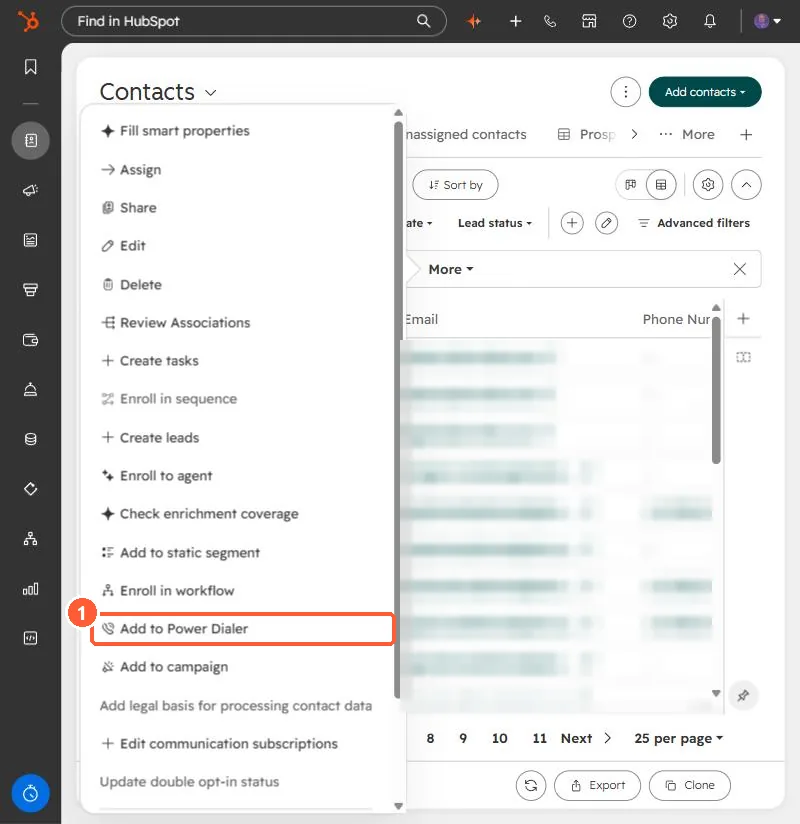

Short answer
Select contacts, then More > Add to Power Dialer. HubSpot's KB says voicemail drops let reps record a message once and drop it on outbound calls; they need Sales Hub Enterprise, work only with HubSpot-provided phone numbers, and do not support text-to-speech.
1. Add contacts
With one contact selected in my demo portal, the More menu shows Add to Power Dialer. I closed it without adding anyone.


2. Numbers
Voicemail drops need a HubSpot number. See calling numbers.